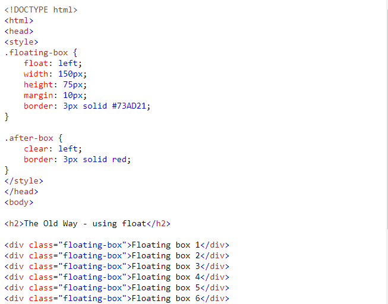

It has been possible for a long time to create a grid of boxes that fills the browser width and wraps nicely (when the browser is resized), by using the float property.
However, the inline-block value of the display property makes this even easier.
inline-block elements are like inline elements but they can have a width and a height.
We can apply CSS in a single element by inline CSS technique.
another example
.You cannot use quotations within inline CSS. If you use quotations the browser will interpret this as an end of your style value.
.These styles cannot be reused anywhere else.
These styles are tough to be edited because they are not stored at a single place..It is not possible to style pseudo-codes and pseudo-classes with inline CSS.
.Inline CSS does not provide browser cache advantages.